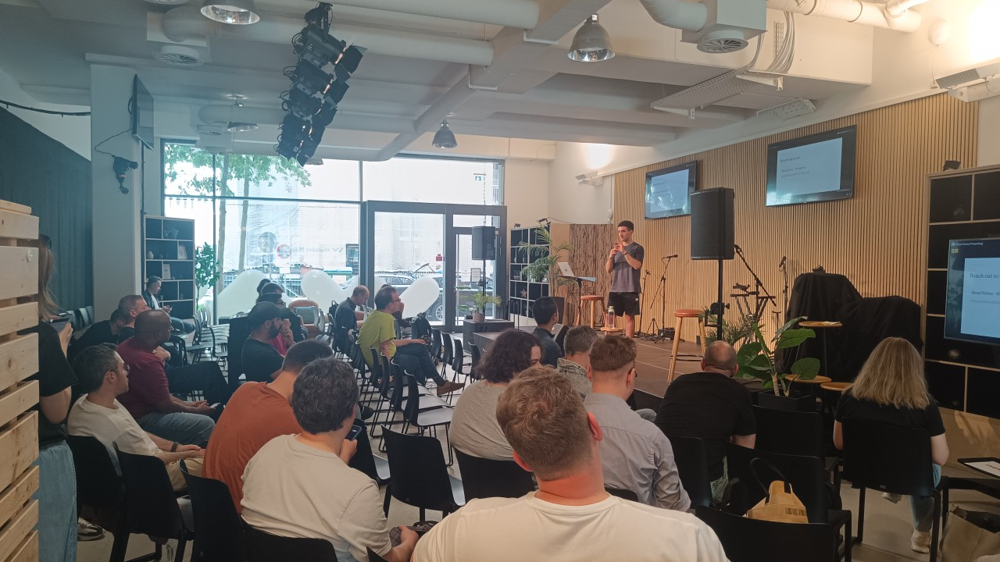

I work on LLM calibration, safety, and evaluation: making models honest about what they know. First author of SECL, with production experience building and shipping large-scale generative and multi-agent systems.
Language models are often confidently wrong, especially out of distribution. My work is about closing that gap: aligning what a model says it knows with what it actually does.
SECL is the current thrust. It calibrates a model at test time using its own P("True") signal on synthetic data, no labels and no human supervision. The same instinct runs through my production work: detect when a system is wrong, measure it, ship the fix.

LLMDay Hamburg · 2026LLMs often assert falsehoods with full confidence, especially on out-of-distribution tasks. This talk walks through SECL: using the generation–discrimination gap to train a model to double-check itself at inference time.
With lightweight LoRA updates on late transformer layers, a model's verbalized confidence is aligned to its own P("True") signal, and entropy-based gating keeps the compute overhead low enough to deploy.
View certificate ↗